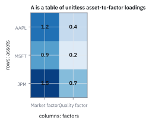
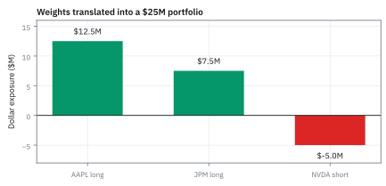
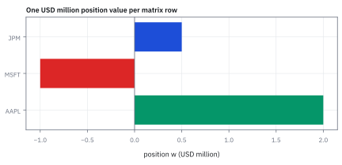

4.1 What a Matrix Is
ตารางตัวเลขทำหน้าที่เป็นเครื่องแปลงข้อมูล
พอร์ตถือ AAPL 2 ล้าน short MSFT 1 ล้าน และถือ JPM \$0.5 ล้าน ความไวต่อตลาดของสามตัวคือ 1.2, 0.9, 1.5 ถ้าตลาดขยับ 1% พอร์ตขยับกี่ดอลลาร์?
เฉลย: ราว \$22,500 เพราะ 1.2(2) + 0.9(−1) + 1.5(0.5) = 2.25 ล้าน แล้ว 1% ของ 2.25 ล้านคือ 22,500 ตารางความไวของสามหุ้นต่อหลายปัจจัยคือเครื่องแปลง position เป็นความเสี่ยงต่อปัจจัย
ตารางแบบนี้เรียกว่า matrix ใช้แปลง vector หนึ่งเป็นอีก vector หนึ่ง และรวมหลายสมการไว้ให้ตรวจพร้อมกัน งาน quant ใช้มันรวม exposure กับข้อมูลความเสี่ยงหลายตัว
ศัพท์ที่ใช้ในหัวข้อนี้
- matrix
- ตารางสี่เหลี่ยมของ numbers ที่จัดเป็น rows และ columns ใช้เก็บ exposures หลายรายการพร้อมกันและส่งข้อมูลเข้า linear algebra
- row
- แนวนอนหนึ่งแถวของ matrix ใช้แทน observation, asset หรือ output ชุดหนึ่งตามความหมายของ model
- column
- แนวตั้งหนึ่งคอลัมน์ของ matrix ใช้แทน feature, factor หรือ position dimension หนึ่งชุด
- element
- ตัวเลขหนึ่งช่องที่อยู่ตรงจุดตัดของ row กับ column ใช้เป็น factor loading เฉพาะคู่ที่กำลังอ่าน
- exposure
- จำนวน sensitivity หรือ notional ที่ portfolio มีต่อ asset หรือ factor ใช้รวมความเสี่ยงและคำนวณ hedge
- notional
- มูลค่าอ้างอิงของ position ซึ่งไม่จำเป็นต้องเท่ากับเงินสดที่จ่าย ใช้กำหนดขนาด trade และคำนวณ exposure
- hedge
- position ที่ตั้งใจให้หักล้างความเสี่ยงของ position อื่น ใช้ลด exposure ที่ desk ไม่ต้องการถือ
- factor
- ตัวแปรร่วมที่ขับเคลื่อนผลตอบแทนของหลาย assets เช่นตลาดหรือ quality ใช้สรุปความเสี่ยงที่ position หลายตัวรับร่วมกัน
- SPX
- ดัชนี S&P 500 ของหุ้นสหรัฐฯ ใช้เป็น factor ตลาดกว้างในตัวอย่าง exposure
- USD
- สกุลเงินดอลลาร์สหรัฐฯ ใช้เป็นหน่วย notional และ P&L ของ portfolio ตัวอย่างทั้งหมด
สัญลักษณ์ที่ใช้ในหัวข้อนี้
| สัญลักษณ์ | ความหมาย | หน่วย |
|---|---|---|
| $A$ | matrix ของ factor loadings/exposures | unitless loading |
| $a_{ij}$ | element แถว $i$ คอลัมน์ $j$ ของ $A$ | unitless loading |
| $m$ | จำนวน rows ของ $A$ | นับรายการ |
| $n$ | จำนวน columns ของ $A$ | นับ factor |
| $w$ | vector ของ portfolio positions | USD million |
| $y$ | vector ของ aggregate factor exposures | USD million |
| $S$ | state-payoff matrix แปลงสัดส่วนการลงทุนเป็นกระแสเงินสดแต่ละสถานะ | USD per share |
| $\theta$ | vector ของจำนวนหุ้นหรือสัญญาที่ถือในแต่ละสินทรัพย์ | shares |
ที่มาที่ไป: ตารางตัวเลขที่กลายเป็นเครื่องแปลง
คำว่า matrix ถูกใช้ในความหมายนี้ครั้งแรกโดย James Joseph Sylvester ในปี 1850 และ Arthur Cayley เป็นคนวางกฎการคำนวณของมันไว้ในบทความปี 1858
สิ่งที่ Cayley ทำไม่ใช่แค่จัดตัวเลขให้เป็นระเบียบ แต่เขานิยามการบวกและการคูณของตารางเหล่านี้ จนมันกลายเป็นวัตถุที่คำนวณได้เหมือนตัวเลขตัวเดียว
การเปลี่ยนมุมมองนี้สำคัญกว่าที่เห็น เพราะมันเปลี่ยนตารางจาก 'ที่เก็บของ' เป็น 'เครื่องแปลง' ที่รับข้อมูลชุดหนึ่งเข้าไปแล้วคายอีกชุดออกมา
ในงานพอร์ต เครื่องแปลงนั้นทำงานทุกวัน คือรับน้ำหนักพอร์ตเข้าไป แล้วคายความเสี่ยงต่อปัจจัยออกมา
ความเป็นมา: จากระบบสมการหลายตัวแปรสู่การแปลงสถานะตลาด
คำว่า matrix ถูกบัญญัติขึ้นราว ๆ ปี 1850 โดย James Joseph Sylvester โดยยืมมาจากภาษาละตินที่แปลว่า 'มดลูก' หรือแหล่งกำเนิด เพราะเขามองว่าตารางสี่เหลี่ยมผืนผ้านี้เป็นต้นกำเนิดของ determinant ย่อยหลายชุด
ต่อมาในปี 1858 Arthur Cayley ได้ตีพิมพ์บทความวางรากฐานพีชคณิตของ matrix ก่อนหน้านั้น นักคณิตศาสตร์อย่าง Carl Friedrich Gauss จัดการระบบสมการเชิงเส้นโดยเขียนตัวคูณ coefficient เรียงทีละบรรทัดและเขียนตัวแปรซ้ำไปซ้ำมา ซึ่งเทอะทะและไม่เห็นภาพการแปลงเชิงเรขาคณิต Cayley จึงเสนอให้มองตารางทั้งชุดเป็นวัตถุเอกเทศที่บวกและคูณกันได้ ยุบระบบสมการยืดยาวให้เหลือรูป $y = Ax$
ในโลกการเงิน Kenneth Arrow และ Gérard Debreu ในช่วงทศวรรษ 1950 ได้นำโครงสร้างนี้มาสร้าง state-payoff matrix ที่แถวคือสถานะตลาดในอนาคต และคอลัมน์คือสินทรัพย์ ทำให้คำนวณมูลค่าและการ hedge ภาระผูกพันได้ในสมการเดียว ดังที่ Martin Haugh และ Garud Iyengar ถ่ายทอดไว้ในตำราวิศวกรรมการเงิน
Worked Example — โจทย์และสิ่งที่ให้มา
โจทย์ให้อะไรมาบ้าง: ให้แถวของ $A$ เป็น asset สามตัวคือ AAPL, MSFT และ JPM และคอลัมน์เป็น market factor กับ quality factor ค่าแต่ละช่องคือ factor loading ซึ่งไม่มีหน่วย ตารางนี้ไม่ใช่แค่ข้อมูลสำหรับ display: มันคือ interface ระหว่าง position system กับ risk engine
ขั้นที่ 1 — ลองกับเครื่องผสมสีก่อน: ตารางคือกติกา ไม่ใช่กล่องเก็บเลข
ลองกับเครื่องผสมสีก่อน ใส่แดง 2 หน่วยกับน้ำเงิน 3 หน่วย แล้วให้ตารางเล็ก ๆ บอกว่าแต่ละถังออกมาเท่าไร ทำด้วยมือทั้งหมด ยังไม่ต้องรู้จักคำว่า matrix
อ่านทีละแถว: แถว orange บอกว่าหยิบแดงมา 0.5 ของที่มี และไม่หยิบน้ำเงินเลย แถว purple หยิบแดง 0.25 กับน้ำเงิน 0.5 แต่ละ output คือ “คูณตามช่องแล้วบวก” ของแถวตัวเอง
ตารางนี้ทำงานกับ input ชุดไหนก็ได้ นี่คือความหมายของคำว่าเครื่องแปลง ชื่อทางการของตารางแบบนี้คือ matrix และการคูณตามช่องแล้วบวกคือกติกาเดียวที่ทั้งบทใช้
ขั้นที่ 2 — นิยามของรูปร่างและชื่อช่อง
บรรทัดนี้เป็น นิยาม ของวิธีเรียกชื่อ ไม่ได้พิสูจน์อะไร matrix เริ่มจากรูปร่างก่อนเสมอ คือกี่แถวกี่คอลัมน์ เพราะรูปร่างเป็นตัวตัดสินว่าคูณกับอะไรได้บ้าง และดัชนีสองตัวเป็นที่อยู่ของแต่ละช่อง
$A$ มี $m$ rows และ $n$ columns; $a_{ij}$ คือช่องที่ row $i$ ตัดกับ column $j$ และเป็น factor loading แบบไม่มีหน่วยในตัวอย่างนี้
ขั้นที่ 3 — นิยาม identity matrix: ตารางที่ทำหน้าที่เหมือนเลข 1
มี matrix หนึ่งแบบที่ต้องรู้จักก่อน คือ identity ซึ่งมีเลข 1 บนแนวทแยงและ 0 ที่เหลือ ลองคูณแถวแรกของตาราง loading ในขั้นถัดไปกับมันด้วยมือ
เลข 1 ในแต่ละคอลัมน์หยิบช่องเดิมมาหนึ่งเท่า เลข 0 ทิ้งช่องอื่น ผลจึงเป็นแถวเดิมทุกช่อง คูณกับ identity แล้วไม่มีอะไรเปลี่ยน เหมือนคูณเลขด้วย 1
อีกเรื่องที่ควรรู้: vector ก็คือ matrix ที่มีคอลัมน์เดียว กติกาทุกข้อของ matrix จึงใช้กับ vector ได้ทันที
ตัวอย่างในสไลด์ของคอร์ส: matrix 2×3, row vector และ identity
$A$ มี 2 แถว 3 คอลัมน์ ช่องแถวที่ 2 คอลัมน์ที่ 3 คือ 5 row vector คือ matrix ที่มีแถวเดียว ส่วน column vector คือ matrix ที่มีคอลัมน์เดียว vector จึงเป็นกรณีพิเศษของ matrix
identity มีหนึ่งบนเส้นทแยงและศูนย์ที่อื่น คูณ matrix ไหนก็ได้ matrix เดิม
ขั้นที่ 4 — ตารางตัวเลขจริง
ใส่ตัวเลขจริงลงไป โดยแต่ละแถวคือสินทรัพย์หนึ่งตัว และแต่ละคอลัมน์คือปัจจัยหนึ่งตัว
แต่ละ row คือ AAPL, MSFT, JPM ตามลำดับ และแต่ละ column คือตลาดกับ quality exposure; $w$ คือ notional position ที่ถือใน USD million ตัวเลขนี้ตั้งใจให้เห็นว่า matrix เก็บหลายความสัมพันธ์ในวัตถุเดียว
ขั้นที่ 5 — matrix ทำหน้าที่รวมข้อมูล
ทำไมต้องพลิก $A$ ก่อนคูณ: กติกา “คูณตามช่องแล้วบวก” ต้องเอาแถวของตารางไปจับกับคอลัมน์ของ input ตารางถูกเก็บเป็น asset × factor แต่คำถามคือ “factor แต่ละตัวได้เท่าไร” จึงต้องให้ factor เป็นแถว การพลิกนั้นคือ transpose ซึ่งหัวข้อ 4.2 จะให้ชื่อและกฎ ตอนนี้แค่รู้ว่าเราหมุนตารางให้แถวตรงกับคำถาม
แล้วใช้กติกาเดียวกับเครื่องผสมสี: แถวตลาดจับกับ position สามตัว คูณตามช่องแล้วบวก
แถวแรก: AAPL ให้ $1.2\times2=2.4$, MSFT ที่ short อยู่ให้ $0.9\times(-1)=-0.9$, JPM ให้ $1.5\times0.5=0.75$ รวม \$2.25 ล้าน ของ market exposure
แปลว่าอะไร: ถ้า market factor ขยับ 1% พอร์ตนี้ขยับราว $0.01\times2.25\text{M}=\$22{,}500$ ตัวเลขนี้คือสิ่งที่ฝ่ายความเสี่ยงอยากได้ ไม่ใช่ตัวตารางเอง
ลองเอง: ถ้าเปลี่ยน MSFT จาก $-1$ เป็น $+1$ market exposure จะเป็นเท่าไร (คำใบ้: บรรทัดที่สองกลับเครื่องหมาย)
ขั้นที่ 6 — การแปลงจากสินทรัพย์สู่สถานะตลาด (state-payoff matrix)
ตัวอย่างนี้มาจากโจทย์ hedging ในตลาดที่มี 3 สถานะและ 2 สินทรัพย์ (หุ้นและพันธบัตร) โดย matrix $S$ เก็บ payoff ของแต่ละสินทรัพย์ในแต่ละสถานะ
เงื่อนไขบังคับคือมิติของ matrix ต้องสอดคล้องกัน: $S$ มีขนาด $3\times 2$ และ $\theta$ มีขนาด $2\times 1$ ผลลัพธ์จึงออกมาเป็น $3\times 1$ หากมิติไม่ตรงกัน การคูณจะไม่สามารถนิยามได้ และในทางเศรษฐศาสตร์จะสะท้อนว่ามีสินทรัพย์ที่ไม่มีข้อมูลราคาในบางสถานะ
หัวใจของการคำนวณนี้คือการประเมินกระแสเงินสดในทุกสถานะของตลาดพร้อมกัน แถวทั้งสามแถวบอกผลลัพธ์เมื่อตลาดอยู่ในภาวะขาขึ้น ปานกลาง และถดถอยตามลำดับ
เมื่อพอร์ตถือหุ้น 2 หุ้นและ short พันธบัตร 1 หน่วย ในแต่ละสถานะเรานำจำนวนหน่วยไปคูณกับราคาของสินทรัพย์แล้วรวมกัน ได้กระแสเงินสดสุทธิของพอร์ตออกมาเป็น vector ในมิติของสถานะตลาด
matrix จึงทำหน้าที่แปลง vector สัดส่วนการถือครองให้กลายเป็น vector ของผลตอบแทนในอนาคต รวบระบบสมการสามสมการให้เหลือการคูณเพียงขั้นตอนเดียว
ขั้นที่ 7 — คำถามที่โต๊ะเทรดถามจริง: ทำอย่างไรให้ exposure ตัวหนึ่งเป็นศูนย์
สมการ exposure มีสมการเดียวแต่มีไม่ทราบค่าสามตัว จึงมีคำตอบมากมายนับไม่ถ้วน วิธีที่โต๊ะเทรดใช้คือตรึงตัวที่ไม่ต้องการแตะไว้ก่อน แล้วแก้หาตัวที่เหลือ นี่ไม่ใช่การเดา แต่เป็นการเลือกจุดหนึ่งบนเส้นคำตอบทั้งหมด
ผลลัพธ์ที่ได้คือการ hedge ตัวแรกในบทนี้: พอร์ตที่ market exposure เป็นศูนย์ แต่ยังถือ position อยู่จริง
เลือก $w_1=0$ แปลว่าไม่แตะ AAPL และเลือก long JPM ไว้ $0.5$ เหลือสมการเดียวกับตัวแปรเดียวคือ MSFT จึงย้ายข้างได้ตรง ๆ ได้ $w_2=-0.8333$ แปลว่าต้อง short MSFT ประมาณ $0.83$ ล้านดอลลาร์
การแทนค่ากลับคือสิ่งที่ทำให้คำตอบน่าเชื่อ: exposure ที่ได้จาก MSFT คือ $-0.75$ และจาก JPM คือ $+0.75$ หักกันพอดี เหลือศูนย์
สังเกตว่าเราไม่ได้แก้ matrix ทั้งก้อน เราใช้กติกาแถวคูณคอลัมน์ตัวเดียวกับขั้นที่ 5 ต่างกันแค่ย้ายข้างสมการ เพราะโจทย์ให้ผลลัพธ์มาแล้วและถามหาย้อนกลับ
ขั้นที่ 8 — ตรวจด้วยเลขของตัวเอง: hedge อีกตัวหนึ่ง
ลองตั้งเป้าเป็น exposure ตัวที่สองบ้าง ตัวเลขเปลี่ยนแต่โครงเดิม และคำตอบที่ได้จะไม่เท่ากับคำตอบก่อนหน้า ซึ่งเป็นบทเรียนสำคัญ: การ hedge ตัวหนึ่งไม่ได้รับประกันว่า exposure ตัวอื่นจะจบไปด้วย
แถวที่ใช้คือแถว quality ซึ่งวางไว้เป็นคอลัมน์ที่สองของตารางในขั้นที่ 4 จึงหยิบตัวเลข $0.4$ กับ $0.2$ กับ $0.7$ มาใช้ ไม่ใช่ชุดเดิม
คำตอบคือ short MSFT $1.75$ ล้าน ซึ่งมากกว่าคำตอบก่อนหน้าถึงสองเท่า เพราะ loading ของ MSFT ต่อ quality มีเพียง $0.2$ จึงต้องใช้ position ใหญ่กว่าจะหักล้างได้
แปลว่าอะไร: ถ้าต้องการทั้งตลาดและ quality เป็นศูนย์พร้อมกัน จะเหลือสมการสองสมการ และต้องแก้พร้อมกัน ซึ่งคือระบบสมการเชิงเส้นที่หัวข้อ 4.5 จะพูดถึง
แล้วเอาไปใช้ทำอะไรได้จริงบ้าง
การมองตารางตัวเลขเป็นเครื่องแปลง ทำให้ทั้งบทที่เหลืออ่านง่ายขึ้นมาก
ใช้แปลงจากน้ำหนักพอร์ต ไปเป็นความเสี่ยงต่อปัจจัยแต่ละตัว ในการคูณครั้งเดียว
ใช้เก็บ covariance ของสินทรัพย์ทั้งพอร์ตไว้ในที่เดียว ซึ่งเป็น input หลักของการจัดพอร์ตทุกวิธี
ใช้เขียนระบบสมการหลายสิบสมการให้เหลือบรรทัดเดียว ซึ่งเป็นภาษาที่ตัวแก้ปัญหาทุกตัวรับ
Figure 4.1a — matrix คือตารางของ loading

สีเข้มคือ factor loading ที่มากขึ้น ไม่ใช่จำนวนเงิน: แถวบอก asset และคอลัมน์บอก factor จึงอ่านความสัมพันธ์ทั้งหกคู่ได้โดยไม่ทำหน่วยหล่นหาย
Figure 4.1b — ส่วนร่วมของ exposure หลังถ่วงน้ำหนัก

แต่ละแท่งคือ position คูณ factor loading ของ asset นั้น เมื่อรวมแท่งสีเดียวกันจะได้ market 2.25 และ quality \$0.95 ล้าน ตรงกับ $A^{\mathsf T}w$
Figure 4.1c — vector ของสถานะเจอกับตาราง loading

position vector มีหนึ่งค่า USD million ต่อหนึ่งแถวของ $A$ ถ้าจำนวนหรือลำดับไม่ตรงกัน นั่นคือ dimension error ไม่ใช่เศษ rounding ที่ปล่อยผ่านได้
Figure 4.1d — factor exposure ของทั้งพอร์ต

หลังคูณด้วย positions แล้ว portfolio มี market exposure 2.25 มากกว่า quality exposure \$0.95 ล้าน ภาพนี้จึงสรุป concentration ของ portfolio จริง ไม่ใช่ผลรวม loadings เปล่า ๆ
คำตอบ — factor exposure 2.25 กับ 0.95
คำตอบ: market exposure เท่ากับ \$2.25 ล้าน และ quality exposure เท่ากับ \$0.95 ล้าน จาก matrix ที่มี assets 3 rows กับ factors 2 columns
ตรวจเองใน 10 วินาที: คูณ $A^{\mathsf T}w$ แยกทีละ factor แล้วต้องได้ vector สองค่า 2.25 และ \$0.95 ล้าน; ถ้าได้สามค่า แปลว่าวาง matrix ผิดด้าน
ใช้ตัดสินใจ: ส่ง factor report ได้เมื่อ asset order ของ matrix ตรงกับ position vector ทุกแถว ถ้า engineer เปลี่ยนลำดับ rows แต่ไม่เปลี่ยน $w$ ให้ reject แม้โปรแกรมจะไม่ขึ้น error
ตัวอย่างที่สอง — คำตอบและวิธีเช็ก
คำตอบ: การทำให้ exposure ตัวหนึ่งเป็นศูนย์ทำได้เสมอถ้ามี position ให้ปรับอย่างน้อยหนึ่งตัว โดยตรึงตัวอื่นไว้แล้วแก้หาตัวที่เหลือ ตัวอย่างนี้ให้ $w_2=-1.75$
ตรวจเองใน 10 วินาที: แทนคำตอบกลับเข้าสมการ exposure ต้องได้ศูนย์พอดี ถ้าได้ค่าใกล้ศูนย์แต่ไม่ใช่ศูนย์ ให้สงสัยการปัดเศษไม่ใช่แนวคิด
ใช้ตัดสินใจ: เขียน position ที่ได้ลงไปทั้ง sign และขนาด เพราะ short ไม่ใช่การลบออกจากพอร์ต แต่เป็นการถือ exposure ฝั่งตรงข้ามซึ่งมีต้นทุนของตัวเอง
กับดัก: มอง matrix เป็นถุงตัวเลข
อย่าทิ้งชื่อ row, ชื่อ column หรือหน่วยไว้ใน metadata เพราะตัวเลข \$1.2 ล้าน กับ 1.2 shares ไม่ใช่ quantity เดียวกัน ก่อนคูณให้เช็ก shape และ label alignment เสมอ
ข้อจำกัด: วิธีนี้สมมติอะไร และของจริงเป็นอย่างไร
| เรื่อง | วิธีนี้สมมติว่า | ของจริงเป็นอย่างไร | ผลที่ตามมาเวลาใช้งาน |
|---|---|---|---|
| ที่มาของตัวเลข | ตัวเลขในตารางถูกต้อง | เกือบทุกค่าที่ประมาณมาจากข้อมูลย้อนหลัง | ความคลาดเคลื่อนของ input ถูกขยายตอนคำนวณ โดยเฉพาะเวลากลับ matrix |
| ขนาด | ตารางมีขนาดพอเหมาะ | พอร์ตจริงมีสินทรัพย์มากกว่าจำนวนวันที่มีข้อมูล | ตารางจะไม่มั่นคง ซึ่งเป็นเหตุผลของหัวข้อ 17.8 |
| ความคงที่ | ความสัมพันธ์คงที่ในช่วงที่ใช้ | มันเปลี่ยนตลอด | ต้องกำหนดว่าจะใช้ข้อมูลย้อนหลังกี่วัน ซึ่งเป็นการแลกกันระหว่างความสดกับความนิ่ง |
สามแถวนี้คือเหตุผลที่งานจัดพอร์ตจริงใช้เวลากับการเตรียม input มากกว่ากับการแก้สมการ
โค้ดคูณตารางจริงและหา hedge ที่ทำให้ exposure เป็นศูนย์
import numpy as np
mix = np.array([[0.5, 0], [0.25, 0.5]])
assert np.allclose(mix @ [2, 3], [1.0, 2.0]) # orange 1.0, purple 2.0
assert np.allclose(np.array([1.2, 0.4]) @ np.eye(2), [1.2, 0.4])
A23 = np.array([[2, 3, 7], [1, 6, 5]])
assert A23.shape == (2, 3) and A23[1, 2] == 5 # a_23 counted from 1
A = np.array([[1.2, 0.4], [0.9, 0.2], [1.5, 0.7]]); w = np.array([2, -1, 0.5])
assert np.allclose(A.T @ w, [2.25, 0.95])
S = np.array([[120, 105], [100, 105], [70, 105]])
assert np.allclose(S @ [2, -1], [135, 95, 35])
w2 = -1.5 * 0.5 / 0.9
assert abs(w2 + 0.8333) < 5e-5 and abs(A[:, 0] @ [0, w2, 0.5]) < 1e-12
w2q = -0.7 * 0.5 / 0.2
assert abs(w2q + 1.75) < 1e-12 and abs(A[:, 1] @ [0, w2q, 0.5]) < 1e-12โค้ดคูณเครื่องผสมสี ตรวจ identity คิด exposure 2.25 กับ \$0.95 ล้าน และ payoff 135, 95, \$35 แล้วแก้ hedge ที่ทำให้ exposure ตลาดและคุณภาพเป็นศูนย์ได้ −0.8333 กับ −1.75
สรุปที่ใช้ได้จริง
- matrix คือ table ที่เก็บความสัมพันธ์ของ rows กับ columns ไม่ใช่ list แบน ๆ
- identity matrix มี 1 บนแนวทแยงและ 0 ที่เหลือ คูณแล้วได้ของเดิม เหมือนเลข 1 และ vector คือ matrix คอลัมน์เดียว
- shape $m\times n$ บอกจำนวน rows และ columns และช่วยป้องกัน dimension error
- row aggregation กับ column aggregation ตอบคำถามคนละแบบ
- ใน risk engine ต้องเก็บ labels และ units คู่กับ numbers
- exposure ตัวหนึ่งเป็นศูนย์หาได้ด้วยการตรึง position อื่นไว้แล้วแก้สมการเดียว ไม่ต้องแก้ทั้งระบบ และต้องแทนค่ากลับเพื่อยืนยันเสมอ